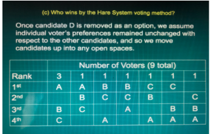

Decision-Making
"Everyday decision-making around the world is constantly based on what came before us." - Steve Berry
Introduction
Mathematics has always been seen as a tool for problem solving. Math by nature is based on logical and valid reasoning so that if it is used for decision-making, it should offer optimal results. A decision-maker can be a high school graduate choosing the right college, a political leader thinking of establishing alliances with other countries, a voter choosing an organization president, or a businessman planning for collaborative partnerships with other companies for better profit. For real life situations like these, we desire intellectual and rational resolutions.
Some mathematical fields provide models that mimic the situations offering the best solutions. This chapter will give the reader a glimpse of these mathematical tools for decision-making. The reader will see how problems of conflicts , cooperation , and social choices are read through the lens of mathematics.
Odds and Chances
The term odds and chances are often used to indicate some measure of probability. An experiment is any process which generates a set of data. Its sample space is the set of all its possible outcomes. A subset of the sample space is called an event.
Equally likely outcomes
Central to probability is the idea of equally likely outcomes (Stewart, 1989). Each side of a die or coin is equally likely to come up. Probability, however, does not always seem to be about events that are equally likely. For example, the bar symbol on a slot machine might have a probability of 25%, while a double diamond might have a probability of 2%. This does not actually contradict the idea of equally likely outcomes. Instead, think of the 25% as 25 chances and the 2% as two chances, for a total of 27 chances out of 100. Each of those 27 chances is equally likely.
Independence of Events
That is, previous draws have no influence on the next draw. A popular catch phrase is “the dice have no memory.” A die or roulette ball cannot look back and determine that it is due for a 6 or some other number.
Illustration: The sample space S when one rolls a die is S= {1,2,3,4,5,6}. Tossing a coin 3 times is an experiment with the following sample space: S={ HHH, HHT, HTH, THH, HTT, THT,TTH, TTT}. H and T denote a head and a tail outcome, respectively. The subset E= { HHH,TTT} corresponds to the event where we tosser gets the same result in each of the three tosses.
Now, let E be an event and let P(E) denote the probability of the event E occurring. There are two ways of computing for P(E).
Classical Definition of Probability
Assume that a given experiment has N different but equally likely possible outcomes. if event E can occur in n of these N ways, then P(E) = n/N.
Example: The odds of rolling a 2 on a fair die are one out of 6, or 1/6. That’s one possible outcome (there’s only one way to roll a 1!) divided by the number of possible outcomes (1,2,3,4,5,6).
The odds of winning Powerball are 1/292,000,000). The “1” is the number of times the event can happen (you winning), divided by the number of possible number combinations (about 292,000,000) tickets sold.
If the outcomes are not equally likely , the empirical definition is used.
Empirical Definition of Probability
Do an experiment repeatedly and count the number of times that event E actually works. Then,
The table below shows a coin toss three times and the corresponding result. What is the empirical probability of getting a head?
Based on the results of the experiment, the Empirical Probability = 3 / 3 = 100%. The empirical probability of getting a head is 100%.
- Drawing incorrect conclusions
- Insufficient sample size
Using empirical probability can cause wrong conclusions to be drawn. For example, we know that the chance of getting a head from a coin toss is ½. However, an individual may toss a coin three times and get heads in all tosses. He may draw an incorrect conclusion that the chances of tossing a head from a coin toss are 100%.
Small sample sizes reduce accuracy. Therefore, large sample sizes are generally used for empirical probability to attain a good probability representation. For example, if an individual wanted to know the probability of getting a head in a coin toss but only used one sample, the empirical probability would be either 0% or 100%.
When computing probabilities using the empirical definition , the result is an approximate instead of an exact value.
Example:If you roll a balanced die, what are the probabilities of getting:
- A 3?
- An odd number?
- A number greater than 2?
Solution:
- Since 3 is one of 6 possible outcomes when a die is rolled, P(3) = ⅙.
- The three odd numbers are 1,3, and 5. Hence, P(odd number)= 3/6 = 1/2
- Since there are four numbers greater than 2,namely 3,4,5, and 6, P(number greater than 2) = 4/6 = 2/3
Counting Techniques
The classical definition of probability depends on knowing the number of all possible outcomes of an experiment and of its related events. To determine these numbers, three rules can be used:
- Multiplication Principle If a sequence of n events has k1 possibilities for the first, k2 possibilities for the second, and so forth, the total number of possibilities for the sequence is k1. k2 … kn.
- Permutation Rule The ordered arrangement of n objects taking r objects at a time is called a permutation and the number of such arrangements is given by:
- Combination Rule A selection of r objects taken from n objects without regard to order is called a combination and the number of such selections is given by:
Probability theory is essential to disciplines that involve quantitative analysis of large sets of data, like in statistics. Probability methods also apply to descriptions of systems whose state is only partially known, as in statistical mechanics. Another area is quantum mechanics, considering the probabilistic nature of physical phenomena at atomic scales.
Game Theory
It is the study of strategic decision-making where situations are called games and the participants are called players. It is based on the idea that many interactions not usually associated with games, such as elections, business competition, and war, can be treated and analyzed like games. In particular, it is the study of how people, companies, or even nations determine strategies under different situations in the face of competing moves or strategies acted out by other players. It deals with problems in which a player’s strategy depends on what the other players do. In its mathematical formulation, a game consists of a set of players, a set of actions for each of them, and a payoff function.Games can be shown through a tree diagram (extensive form) or a table of numbers (normal form).
Prisoner's Dilemma
Two suspected felons are caught by the police and interrogated in separate. They were told:
- If you both confess, you will each go to jail for 10 years
- If only one of you confesses, he gets only one year and the other gets 25 years
- If neither of you confesses, you each get three years in jail.
- Majority Criterion
- Condorcet Criterion
- Monotonicity Criterion
- Independence of Irrelevant Alternatives Criterion
- Pareto Criterion
- Majority Rules
- Plurality Method
- Condorcet Method
- Borda Count Method
- Sequential Pairwise Voting
- Hare System
- Approval Voting
The prisoner's dilemma in its extensive form looks like this:
The order of moves is represented from the left to the right of the tree. The leftmost node represents the first move of player 1 (confess or do not confess). The two nodes to the right of it are subgames. Each represents Player 2’s possible reaction to the first move made by player 1. The rounded rectangle indicates that when the second player makes his/her decision, he/she does not know the decision of the first player. The four nodes at the right column are terminal nodes. They represent all four possible payoffs to the particular game.
In normal form, it looks like this:
Classification of Games
ANALYZING SIMULTANEOUS GAMES IN NORMAL FORM
Maximin solution - involves choosing the strategy that gives you the maximum possible payoff, even when your opponent is able to guess your choice.
If one strategy dominates all other strategies (for a particular player in the game), it is said to be a dominant strategy (for that player). If every player in the game has a dominant strategy, then a dominant strategy equilibrium occurs.
Nash equilibrium is a list of strategies with one strategy per player, such that each strategy is the best response to the other strategies on the list. Equivalently, Nash equilibrium also refers to a situation where no player can reach a better payoff by changing strategies. The game reaches an impasse in which players keep their current strategies because switching will not accomplish anything.
Example:
In the battle of the sexes, a couple argues over what to do over the weekend. Both know that they want to spend the weekend together, but they cannot agree over what to do. The man prefers to go watch a boxing match, whereas the woman wants to go shopping. This is a classical example of a coordination game, analysed in game theory for its applications in many fields, such as business management or military operations.
Since the couple wants to spend time together, if they go separate ways, they will receive no utility (set of payoffs will be 0,0). If they go either shopping or to a boxing match, both will receive some utility from the fact that they’re together, but one of them will actually enjoy the activity. The description of this game in strategic form is therefore as follows:
In this case, knowing your opponent’s strategy will not help you decide on your own course of action, and there is a chance an equilibrium may not be reached. This can be easily seen by looking for a dominant strategy, eliminating all dominated strategies. However, there will be two dominant strategies, two Nash equilibria (underlined in red). The way to solve this dilemma is through the use of mixed strategies, in which we look at the probability of our opponent choosing one or the other strategy and balance our pay off against it.
A method of analyzing games in normal form is the iterative elimination of (strongly) dominated strategies (IESDS). It can be used to find Nash equilibria.
ANALYZING SEQUENTIAL GAMES IN EXTENSIVE FORM
In analyzing games in extensive form, subgames are often examined. A subgame includes a decision point and all other parts of the diagram emanate from it.
The following is the game with the subgames marked:
A situation where each player makes his/her decisions on the assumption that every subgame will be in equilibrium is a subset perfect equilibrium, a refinement of Nash equilibrium. In fact, a game is in subgame perfect equilibrium if and only if every subgame is a Nash equilibrium.
In summary, to solve sequential games, the subgames at the last stage in each branch are solved to reduce the game to a smaller one. This process is repeated until all subgames are solved. This process is called backward induction and gives a subgame perfect equilibrium.
For deeper understanding, kindly click on the link for a audio visual presentation: Prisoners’ Dilemma and Nash Equilibrium by Khan Academy
Social Choices
Social choice theory looks at processes by which different ad conflicting choices of members of a group are consolidated into a single choice of the group.
Preference ballot is a form on which ech voter ranks all eligible candidates, from first to last place, with no tied ranks.
Preference table shows how many times each possible ballot was submitted.
Fairness Crteria
If there is a choice that has a majority of the first-place votes in an election, then that choice should be the winner of the election.
If there is a choice that in a head-to-head comparison is preferred by the voters over every other choice, then that choice should be the winner of the election.
If choice X is a winner of an election and, in a reelection, the only changes in the ballots are changes that only favor X, then X should remain a winner of the election.
If candidate or alternative X is a winner of an election and one (or more) of the other candidates or alternatives is removed and the ballots recounted, then X should still be a winner of the election.
Every voter prefers a certain candidate over the other then it is impossible for the latter to win the election.
METHODS OF VOTING
The candidate which receives more than 50% of first-place votes wins the election. But it only guarantees a winner if there are two candidates and an odd number of votes. This method satisfies the majority criterion.
Kenneth May (May’s theorem) supports this method as if (a) the number of votes is odd, (b) there are only two candidates, and (c) a voting method that never results in a tie is preferred, then majority rules is the only voting method that satisfies the following three criteria:
- All voters are treated equally.- Both candidates are treated equally.
- There is monotonicity.
Whoever receives the most first-place votes is declared the winner. This by far the simplest and most widely-used voting method. It may require a tie-breaker, though.
Plurality means “more votes than any other candidate” whereas majority means “more than 50% of the votes”. These terms do not mean the same thing. Every majority is a plurality. That is, the plurality method satisfies the majority criterion. However, not every plurality is a majority
Example:There are 80 voters in a plurality elections between Donahue, Garza, and Weis. After 55 votes have been counted, Donahue has 24 votes, Garza has 18 votes, and Weis has 13 votes. How many of the remaining votes does Donahue need to guarantee he wins?
How to solve this: First, pick your candidate’s biggest competition, in this case Garza. Pretend all 25 remaining votes go to Garza and Donahue. Let x be the number of votes Donahue needs to tie Garza in this scenario. Then Garza gets 25 − x of the remaining votes. Since It's a tie, 24+x=18+(25−x). Solveforxtogetx=9.5. IfDonahuegets more votes than this, he is guaranteed to win, and so the answer is the smallest number bigger than x, in this case 10 votes.
Plurality method fails the condorcet criterion. In some elections, there is a candidate who beats every other candidate head-to-head, but does not win the election. It also fails the independence of irrelevant alternatives criterion
Plurality method is vulnerable to what is called strategic voting. Whenever voters vote differently from their true preferences, the voting method may be flawed.
As Gibbard-Satterthwaite’s theorem state, no voting method is completely resistant to strategic voting.
Plurality runoff is a variation that occurs when there is a runoff between the two candidates receiving the most first-place votes. It is a second-step election between the top two vote-getters in a plurality election if no candidate receives a majority.
An election method that elects the candidate that would win a majority of the vote in all of the head-to-head elections against each of the other candidates, whenever there is such a candidate. A candidate with this property is called the Condorcet winner.cif there are only two candidates, the condorcet method is exactly the same as the majority rules method. The condorcet voting paradox is the case where the condorcet method does not produce a condorcet winner (hence, no election winner as well).
Example:The Condorcet method is the final method for computing the winner. First, for each pair of candidates determine which candidate is preferred by the most voters. For example, here is a comparison between Samuel Adams and Guinness (the number of supporters in the first row represents the number of voters who prefer Samuel Adams to Guinness, and vice-versa for the second row):
Winner for this pair is Samuel Adams.It assigns points in a non-increasing manner to the ranked candidates on each voter’s preference list. If there are n candidates, a first place vote is worth n - 1 points, a second place vote is worth n- 2 points, and do on, down to 0 points for last place. The total points received for each candidate from all voters are added. The winner is the candidate with the most points (reffered to as a candidate’s Borda score).
Real-life examples of the Borda count method include voting for the best college football team in the United States, such as AP College Football Poll, and voting for the Heisman Trophy.
However, the Borda count method, therefore, violates the majority criterion. It also fails to satisfy the independence of irrelevant alternatives criterion.
Example:If all points are added up, the final score is as follows:
Amsterdam: 212 + 7 + 25 + 15 = 259
Oslo: 159 + 28 + 75 + 45 = 307
Budapest: 106 + 14 + 50 + 60 = 230
Seville: 53 + 21 + 100 + 30 = 204
Assuming the Borda Count Method is decisive for the choice of city, Oslo is the winner in this vote.
It begins with an agenda or the order in which the candidates are compared one-on-one, and pits the first candidate against the second in a head-to-head contest.
Real-life examples include the legislative or law-making process.
Sequential Pairwise voting violates the independence of irrelevant alternatives criterion. It also fails the Paret criterion.
A winner is determined by repeatedly deleting candidates that are “least preferred” in stages. A winner may emerge after all other candidates have been deleted or when there is a tie among two or more candidates.
In history, this method is used in selecting the site of the Olympics, the Academy Awards, and the elections in Australia and Ireland.
The Hare system, however, violates the monotonicity criterion.
Example:
Each voter choose candidates he/she finds acceptable. A voter can choose no one, more than one, or all of the candidates. The winner of the election is the candidate with the largest number of votes. It is used to elect the U.N. secretary-general and the officers of academic and professional societies.
SUMMARY:
Kenneth Arrow (1951) proved that it is impossible to design a set of rules for social decisions that simultaneously obeys all of the fairness criteria. More precisely, it is possible that in a specific election, a particular outcome of votes violates some fairness criterion.
Arrow’s Impossibility TheoremThere is no voting method (nor will there ever be) that will satisfy a reasonable set of fairness criteria when there are three or more candidates and two or more voters.
Social choice theory is a theoretical framework for analyzing the outcome of combining individual preferences, opinions, and interests to reach a collective or group decision. It dates back to condorcet’s formulation of the voting paradox. Kenneth Arrow’s (1951) Social choice and individual values is generally acknowledged as the basis of the modern social choice theory. It is applicable to group-decision making, negotiation, and other economic processes. More recently, social choice theory also considers approaches to compensations and fairness, liberty and rights, strategy-proofing of social-choice mechanisms, welfare, justice, and poverty, among others. It is a growing discipline.
For deeper understanding, kindly click on the link for an audio visual presentation:Decision-Making in the context of social choices (voting procedures) by Ruffini Math Lessons